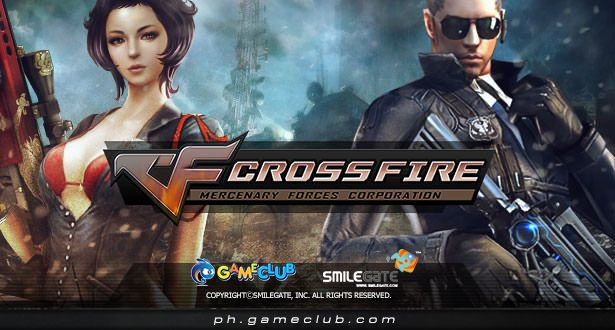
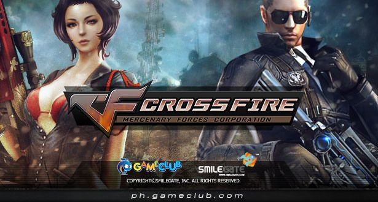

All About Myself

Age: 21
Address: D-4 San Juan, Punta, Nasipit, Agusan del Norte
Age: 21
Address: D-4 San Juan, Punta, Nasipit, Agusan del Norte
I was born on the 3rd of July 2002. I burst into this world with such enthusiasm that even the doctor couldn't help but chuckle. My first word? Not the traditional "mama" or "dada," but a resounding "cookie." I guess even as a baby, I had my priorities straight.


 
